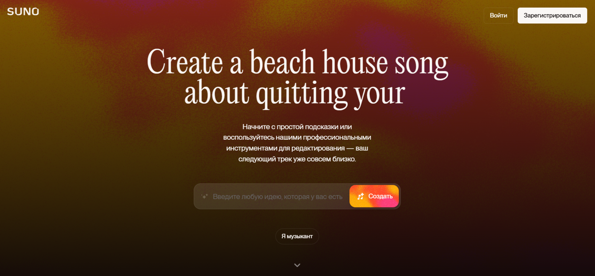

Suno AI — это инновационный инструмент на основе искусственного интеллекта, который позволяет создавать оригинальные музыкальные композиции с вокалом и инструментальным сопровождением по текстовым описаниям.
🎵 Основной функционал
Генерация музыки из текста
Пользователи вводят описание песни (жанр, настроение, тему), и Suno AI создает полноценные треки длительностью до 2–4 минут. Например, запрос "детская песня о посещении зоопарка" или "русский рэп про тополиный пух" превращается в готовую композицию с вокалом.
Поддержка вокала и инструментов
ИИ генерирует не только мелодию, но и тексты песен (на языке запроса), аранжировку, мужской/женский вокал, инструментальные партии. Результаты часто неотличимы от работ профессиональных музыкантов.
Режимы работы
Автоматический: Достаточно краткого описания в поле "Song Description".
Продвинутый (Custom Mode): Позволяет загружать собственные тексты, указывать структуру песни (куплеты, припевы), выбирать стиль и инструменты с помощью тегов (например, [Chorus], [Guitar Solo]).
🛠️ Как использовать Suno AI
- Регистрация: Доступна через аккаунты Google, Discord, Apple или Microsoft. Бесплатно дается 50 кредитов в день (хватает на 5 песен по 2 варианта каждая).
- Создание трека:
- Ввести описание в "Song Description" (например, "эпичная рок-песня с гитарными риффами")
- Для кастомизации включить "Custom Mode", прописать текст в "Lyrics", задать стиль в "Style of Music" (например, "Funk Rock, Stadium, heavy drums")
- Экспорт: Скачивание в MP3 или MP4 (с обложкой и субтитрами). Платные подписки позволяют экспортировать в WAV для профессионального сведения.
Пример использования:
Запрос: "Песня в стиле русской народной музыки о реке Волге с женским вокалом"
Результат: Трек длительностью 2:30 с балалайкой, гармонью и чистым женским вокалом с текстом о просторах Волги.
💡 Уникальные возможности
Расширение треков
Функция "Extend" добавляет новые сегменты к существующей композиции (например, дописывает куплет или соло).
Поддержка 50+ языков
Русский, английский, французский и др. Например, запрос "напиши балладу на французском о любви" корректно обрабатывается.
Генерация обложек
К каждому треку автоматически создается иллюстрация по теме песни.
⚠️ Ограничения и нюансы
- Коммерческое использование: Бесплатные аккаунты не могут монетизировать треки. Для этого нужна подписка Pro ($10/мес) или Premier ($30/мес).
- Оплата из России: Требуются зарубежные карты. Альтернатива — сервисы-посредники вроде PayHolder.
- Качество вокала: Иногда возникают артефакты произношения, особенно в сложных словах. Рекомендуется писать тексты фонетически (например, "привэт" вместо "привет").
- Авторские права: Все созданные треки принадлежат Suno Inc. При публикации необходимо указывать источник.
🎧 Примеры применения
- Контент-мейкеры: Создание фоновой музыки для видео или подкастов.
- Музыканты: Генерация демо-треков для альбомов или помощь в преодолении творческого кризиса.
- Реклама: Быстрое производство джинглов.
- Образование: Создание обучающих песен для детей.
- Игровая индустрия: Генерация уникального саундтрека для инди-игр.
🔮 Заключение
Suno AI демократизирует создание музыки, позволяя даже новичкам генерировать профессиональные треки за минуты. Однако для точного контроля над результатом важно осваивать продвинутые настройки и теги. Сервис доступен на официальном сайте, в мобильных приложениях (iOS/Android) и через Discord.
Статья подготовлена с помощью ИИ-ассистента DeepSeek-R1 на основе анализа возможностей Suno AI.